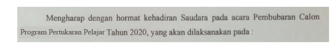

Aku teringat dalam buku the Great gatsby, Nick Carraway mengatakan pada dokter
jiwanya bahwa “Satu orang yang penuh berjuta harapan dari semua orang yang kutemui, dia tidak
pernah kalah dari apapun, kecuali menang atau belajar”.
----------
Hari itu tepat tiga hari setelah hari Valentine (yang katanya adalah hari kasih sayang),
sedikit mendung namun tidak terlalu gelap. Aku berada di dalam gedung Balai Pemuda.
“Assalamualaikum, selamat pagi adik-adik semua. Kami akan mengumumkan nama-nama
yang lolos dalam seleksi ini! Mohon diperhatikan dengan baik!” , seorang pria yang masih cukup
muda dengan rambut klimisnya naik ke atas sebuah podium dengan membawa pengeras suara.
Suasana membuatku gusar, tanganku berkeringat dingin karena panik dan deg-degan.
Doaku mengalir dengan deras memohon pada Tuhan agar lolos menjadi siswa yang dikirim ke
Negeri Sakura untuk pertukaran pelajar asing, walau jujur aku sudah skeptis bahwa tidak akan
lolos, dan doa-doa ini tidak ada gunanya karena keputusan panitia sudah ditulis jauh-jauh hari
sebelum aku berdoa.
“Ayudia Ananda!”,sebut pria itu. Setelah menunggu lama, akhirnya namaku disebutkan
paling akhir dari dua puluh siswa-siswi. Hari itu aku merasa seperti orang yang paling bahagia di
dunia dan sangat bersyukur pada Tuhan. Sungguh bahagia yang sulit kuungkapan lewat kata.
Sebenarnya, aku adalah tipe orang yang selalu mencatat hal-hal kecil dalam hidup. Tepat
kuingat betul waktu itu Sabtu pagi di medio Maret 2020, semua mimpiku terbang ke Jepang mulai
pupus, bumi pertiwiku dihantam kasus pertama pandemi Covid-19. Remuk redam dan gundah
perasaanku seluruhnya. Keberangkatan studiku ditunda dan aku harus berdiam diri dalam rumah
dengan perasaan penuh khawatir.
“Tuhan!, apa yang kau perbuat kepadaku? apakah kau dendam padaku?! Tolong Tuhan,
kau sungguh tidak asyik kali ini!”batinku. Jika pertukaran pelajar ini dibatalkan, aku tidak akan
bisa mengikuti seleksi lagi di tahun depan karena saat ini aku adalah siswi SMA tingkat akhir.
Suatu sore aku sedang jogging mengelilingi kompleks perumahan. “Ting!!” suara notifikasi
pesan dari WhatsApp ku. Tanganku refleks membuka pesan yang baru saja masuk. Terdapat
sebuah dokumen berisi surat pemberitahuan dari panitia pertukaran pelajar.

Aku terdiam sambil menatap layar smartphone ku. Tak sanggup berkata-kata, tapi air mata
langsung jatuh membasahi pipiku. Hatiku kecewa, kecewa paling berat yang pernah kurasakan.
Segera aku bergegas pulang ke rumah sambil mengusap air mataku yang terus mengalir. Sesekali
aku melihat orang lewat, mereka menatapku heran karena menangis sendirian di jalan.
“Hai hati
yang lemah, ini bukan sepenuhnya salahmu. Percayalah ada sesuatu yang lebih indah setelah
awan mendung ini berlalu ” bisikku pada diriku sendiri.
Hari demi hari telah berlalu. Kuputuskan untuk menyudahi tangis dan mulai untuk bangkit.
Layaknya seorang pelaut yang menjelajahi samudera, aku juga menjelajahi samudera impianku
yang lainnya. Aku mengikuti lomba cipta puisi yang diselenggarakan oleh salah satu universitas
ternama di Indonesia dan berhadiah masuk universitas tersebut tanpa tes. Universitas yang
kudambakan selama ini, dengan jurusan sastra Indonesia yang sangat aku minati. Kau tahu bukan
nyawa dari sebuah puisi adalah rasa? Aku merasa akan sangat menyentuh, jika kegagalanku dalam
pertukaran pelajar aku jadikan sebuah puisi, karena peristiwa itu sangat membekas di hati.
Hari ini adalah pengumuman pemenang lomba cipta puisi melalui live Youtube. Lagi dan
lagi di momen seperti ini aku merasa sangat skeptis untuk bisa menjadi pemenang. Pengumuman
secara daring ternyata tidak kalah membuat jantungku berdegup kencang.
“..dan yang terakhir, pengumuman juara 1. Pemenangnya adalah Ayudia Ananda dari SMA
Garuda”ucap seorang wanita muda berhijab di siaran live Youtube.
“Whoaa!” Teriakku dari dalam
kamar, hingga membuat ibu kaget dan masuk ke kamarku.
“Ada apa nak? kenapa teriak kencang
sekali?” tanya ibuku.
“Ini bu, aku sangat terkejut bisa memenangkan lomba cipta puisi dan Ibu
tahu? aku bisa masuk universitas ini tanpa tes!”” jawabku dengan penuh semangat.
“Wah begitu?
selamat ya nak Ibu bangga padamu!” ucap ibu sambil memelukku bangga.
Kini aku mengerti arti dari sebuah impian sesungguhnya. Tidak ada kata gagal dan kalah
dalam kamus impian. Aku belajar bangkit dari kegagalanku. Aku juga belajar cara melihat dunia
dari dua sisi yang berbeda. Tuhan akan selalu memberi yang kita butuhkan, bukan yang kita
inginkan. Aku membayangkan jika seandainya pertukaran pelajar itu berlanjut, mungkin aku tidak
akan mendapatkan kesempatan masuk universitas yang kudambakan tanpa tes.
~ Oleh: Belva Talitha D
Sumber gambar: Freepik